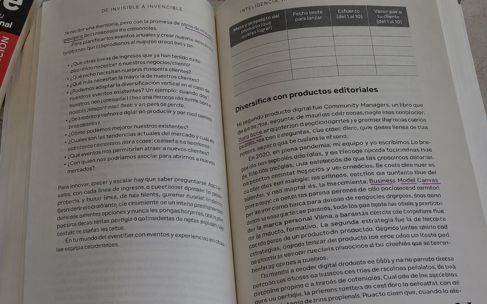

Es solo 1 capítulo.

Es solo 1 capítulo.
@raquelmendoza.mkt
Es solo 1 hora.
Es solo 1 hora.
@raquelmendoza.mkt
Enfócate en lo que
realmente importa. Tu tiempo decide hacia dónde vas. Sígueme para más contenido como este @raquelmendoza.mkt
realmente importa. Tu tiempo decide hacia dónde vas. Sígueme para más contenido como este @raquelmendoza.mkt